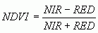
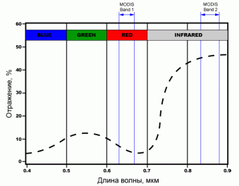
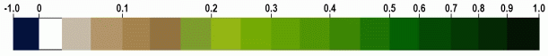
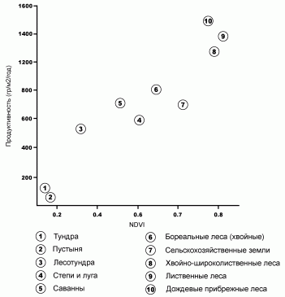

Теоретические основы использования индекса NDVI
С примерами карт на основе индекса NDVI можно ознакомиться в статье "Практика".
NDVI (Normalized Difference Vegetation Index) - нормализованный относительный индекс растительности - простой количественный показатель количества фотосинтетически активной биомассы (обычно называемый вегетационным индексом). Один из самых распространенных и используемых индексов для решения задач, использующих количественные оценки растительного покрова.
Вычисляется по следующей формуле:

где,
NIR - отражение в ближней инфракрасной области спектра
RED - отражение в красной области спектра
Согласно этой формуле, плотность растительности (NDVI) в определенной точке изображения равна разнице интенсивностей отраженного света в красном и инфракрасном диапазоне, деленной на сумму их интенсивностей.
Расчет NDVI базируется на двух наиболее стабильных (не зависящих от прочих
факторов) участках спектральной кривой отражения сосудистых растений.
В красной области спектра (0,6-0,7 мкм) лежит максимум поглощения солнечной
радиации хлорофиллом высших сосудистых растений, а в инфракрасной области
(0,7-1,0 мкм) находится область максимального отражения клеточных структур
листа. То есть высокая фотосинтетическая активность (связанная, как правило,
с густой растительностью) ведет к меньшему отражению в красной области
спектра и большему в инфракрасной. Отношение этих показателей друг к другу
позволяет четко отделять и анализировать растительные от прочих природных
объектов. Использование же не простого отношения, а нормализованной разности
между минимумом и максимумом отражений увеличивает точность измерения,
позволяет уменьшить влияние таких явлений как различия в освещенности
снимка, облачности, дымки, поглощение радиации атмосферой и пр.

Участки характеристической кривой отражения растительности (усредненной), используемые для расчета NDVI c помощью данных MODIS
NDVI может быть рассчитан на основе любых снимков высокого, среднего или низкого разрешения, имеющим спектральные каналы в красном (0,55-0,75 мкм) и инфракрасном диапазоне (0,75-1,0 мкм). Алгоритм расчета NDVI встроен практически во все распространенные пакеты программного обеспечения, связанные с обработкой данных дистанционного зондирования (Arc View Image Analysis, ERDAS Imagine, ENVI, Ermapper, Scanex MODIS Processor, ScanView и др.).
Комбинации каналов камер спутников используемые для расчета NDVI:
|
MSS Landsat(4,5) |
5 (0.6-0.7 мкм), 6 (0.7-0.8 мкм) или 7 (0.8-1.1 мкм) |
|
TM Landsat(4,5) |
3 (0.63-0.69 мкм), 4 (0.76-0.90 мкм) |
|
ETM+ Landsat7 |
3 (0.63-0.69 мкм), 4 (0.75-0.90 мкм) |
|
AVHRR NOAA |
1 (0.58-0.68 мкм), 2 (0.72-1.0 мкм) |
|
MODIS Terra(Aqua) |
1 (0.62-0.67 мкм), 2 (0.841-0.876 мкм) |
|
ASTER Terra |
2 (0.63-0.69 мкм), 3 (0.76-0.86 мкм) |
|
LISS IRS(1C/1D) |
2 (0.62-0.68 мкм), 3 (0.77-0.86 мкм) |
Со времени разработки алгоритма для расчета NDVI (Rouse BJ, 1973) у него появилось довольно много модификаций предназначенных для уменьшения влияния различных помехообразующих факторов. Таких, к примеру, как поглощение аэрозолями атмосферы (atmospheric - resistant vegetation index - ARVI), отражение от почвенного слоя (soil adjusted vegetation index - SAVI) и др. Для расчета этих индексов используются формулы, учитывающие отношения между отражающей способностью различных природных объектов и растительностью в других диапазонах, помимо красного и инфракрасного, что делает их более сложными в применении. Существуют также индексы, основанные на NDVI, но корректирующие сразу несколько помехообразующих факторов, как, например EVI (Enhanced vegetation index).

Дискретная шкала NDVI
Для отображения индекса NDVI используется стандартизованная непрерывная градиентная или дискретная шкала, показывающая значения в диапазоне от -1..1 в % или в так называемой масштабированной шкале в диапазоне от 0 до 255 (используется для отображения в некоторых пакетах обработки ДЗЗ, соответствует количеству градаций серого), или в диапазоне 0..200 (-100..100), что более удобно, так как каждая единица соответствует 1% изменения показателя. Благодаря особенности отражения в NIR -RED областях спектра, природные объекты, не связанные с растительностью, имеют фиксированное значение NDVI, (что позволяет использовать этот параметр для их идентификации):
|
Тип объекта |
Отражение в красной области спектра |
Отражение в инфракрасной области спектра |
Значение NDVI |
|---|---|---|---|
|
Густая растительность |
0.1 |
0.5 |
0.7 |
|
Разряженная растительность |
0.1 |
0.3 |
0.5 |
|
Открытая почва |
0.25 |
0.3 |
0.025 |
|
Облака |
0.25 |
0.25 |
0 |
|
Снег и лед |
0.375 |
0.35 |
-0.05 |
|
Вода |
0.02 |
0.01 |
-0.25 |
|
Искусственные материалы (бетон, асфальт) |
0.3 |
0.1 |
-0.5 |
Но, как правило, для задач связанных с картографированием растительности используют немасштабированную шкалу, начинающуюся с 0 (значения NDVI меньше 0 растительность принимать не может). Для перевода из шкалы -1..1 в 0..200 (масштабирование) используется следующая формула:
масштабированный NDVI = 100(NDVI + 1)
Существует устойчивая корреляция между показателем NDVI и продуктивностью
для различных типов экосистем:

Это свойство довольно активно используется для регионального картирования и анализа различных типов ландшафтов, оценке ресурсов и площадей биосистем в масштабе стран и континентов. Однако чаще, расчет NDVI употребляется на основе серии разновременных (разносезонных) снимков с заданным временным разрешением, позволяя получать динамическую картину процессов изменения границ и характеристик различных типов растительности (месячные вариации, сезонные вариации, годовые вариации).
Будучи искусственным безразмерным показателем NDVI предназначен для измерения эколого-климатических характеристик растительности, но в тоже время может показывать значительную корреляцию с некоторыми параметрами, совсем другой области:
Зависимость между этими параметрами и NDVI, как правило, не прямая и связана с особенностями исследуемой территории, ее климатическими и экологическими характеристиками, кроме этого, часто приходиться учитывать временную разнесенность параметра и ответной реакции NDVI.
Благодаря всем этим особенностям, карты NDVI часто используются как один из промежуточных дополнительных слоев для проведения более сложных типов анализа. Результатами которых могут являться карты продуктивности лесов и сельхозземель, карты типов ландшафтов, растительности и природных зон, почвенные, аридные, фито-гидрологические и другие эколого-климатические карты. Так же, на его основе возможно получение численных данных для использования в расчетах оценки и прогнозирования урожайности и продуктивности, биологического разнообразия, степени нарушенности и ущерба от различных естественных и антропогенных бедствий, аварий и т.д. Часто эти данные используются для вычисления других, универсальных и территориально-привязанных индексов: LAI - индекс листовой поверхности , FPAR - индекс фотосинтетической активной радиации, поглощаемый растительностью и пр.
В целом, главным преимуществом NDVI является легкость его получения: для вычисления индекса не требуется никаких дополнительных данных и методик, кроме непосредственно самой космической съемки и знания ее параметров.
Так, благодаря минимальному временному разрешению данных MODIS/Terra, вычисление NDVI на их основе может давать оперативную информацию об эколого-климатической обстановке и возможность отслеживать динамику различных параметров с периодичностью до 1 недели! А большой пространственный охват позволяет проводить мониторинг территорий, соразмерный с площадями областей и целых стран. Данные же камер высокого разрешения, типа Landsat, IRS, Aster позволяют следить за состоянием объектов размерами вплоть до отдельного поля или лесного выдела.
Следует, однако, учитывать и главные недостатки использования NDVI-индекса:
up = upos(ndvi1, ndvi2, ndvi3, ndvi4, ndvi5)
result = con(up == 1, ch1, up==2, ch1, up==3, ch1, up==4,ch1, up==5,
ch1)
С примерами карт на основе индекса NDVI можно ознакомиться в статье "Практика".
Примеры карт на основе индекса NDVI
Дата создания: 27.12.2002
Автор(ы): Максим Дубинин